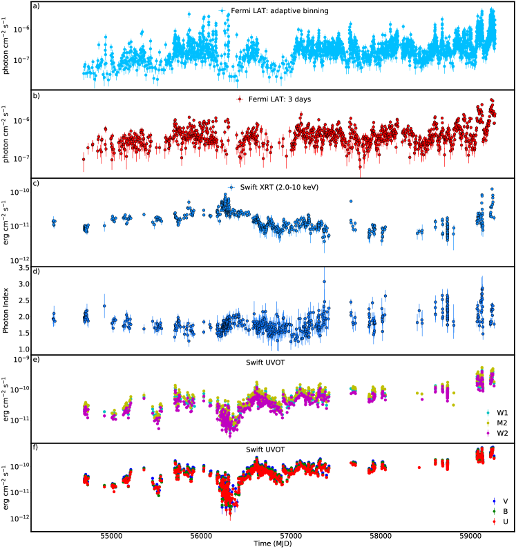
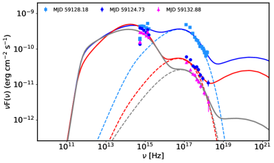
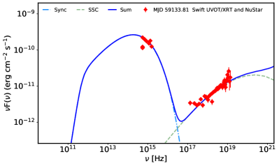
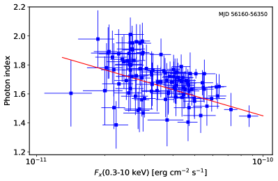
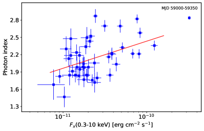
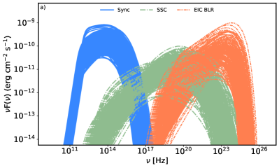
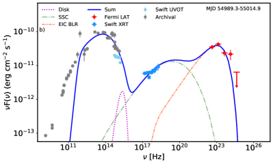
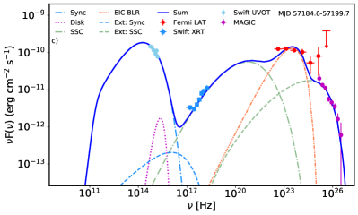
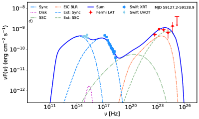
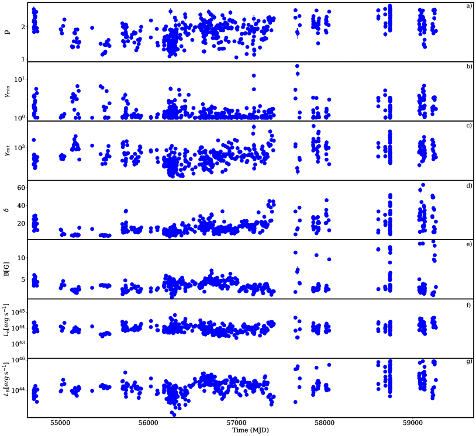

رؤية عريضة النطاق لـ BL Lac على مدى ثلاثة عشر عاما
الملخص
نعرض نتائج تحليل موسع للبيانات البصرية وفوق البنفسجية وبيانات الأشعة السينية وبيانات أشعة التي جُمعت من أرصاد النموذج الأولي لأجرام BL Lac، أي BL Lacertae، خلال مدة تقارب 13 سنة، بين آب/أغسطس 2008 وآذار/مارس 2021. يتميز المصدر بانبعاث شديد التغير عند جميع الترددات، وغالبا ما ترافقه تغيرات طيفية. وفي نطاق أشعة كُشف عدد من التوهجات البارزة، بلغ أكبرها تدفقا قدره . وقد اتسم التغير الطيفي في الأشعة السينية للمصدر أثناء ألمع توهج في MJD 59128.18 (06 تشرين الأول/أكتوبر 2020) باتجاه أكثر ليونة عند ازدياد السطوع، نتيجة انتقال قمة السنكروترون إلى Hz، داخل نطاق HBL بوضوح. وقد دُرس الانبعاث متعدد الأطوال الموجية واسع التغير من BL Lacertae على نحو منهجي عبر ملاءمة نماذج لبتونية، تتضمن مكوّني كومبتون الذاتي السنكروتروني وكومبتون الخارجي، مع 511 توزيعا طيفيا للطاقة (SEDs) عريضة النطاق وعالية الجودة وشبه متزامنة. ويمكن ملاءمة غالبية SEDs المختارة على نحو كاف ضمن نموذج أحادي المنطقة وبمعلمات معقولة. ولا يمكن تفسير سوى 46 SEDs ذات أطياف أشعة سينية لينة وساطعة، وحين رُصد المصدر في نطاقات أشعة ذات الطاقة العالية جدا، إلا ضمن سيناريو لبتوني ثنائي المنطقة. ويُفسر سلوك HBL المرصود أثناء ألمع توهج في الأشعة السينية بأنه ناجم عن ظهور انبعاث سنكروتروني من جسيمات مسرّعة حديثا في منطقة انبعاث ثانية تقع خارج منطقة الخطوط العريضة.
keywords:
الكوازارات: فردي: BL Lacertae– المجرات: النفاثات – الأشعة السينية: المجرات- - أشعة غاما: المجرات1 مقدمة
تتميز النوى المجرية النشطة راديوية الجهارة (AGNs) بنفاثات نسبية ضيقة ثنائية الجانب تنشأ من الثقب الأسود فائق الكتلة المركزي. والبلازارات هي الصنف الفرعي من AGNs راديوية الجهارة الذي تصادف فيه أن تصنع إحدى النفاثات زاوية صغيرة () مع خط نظر الراصد (Urry &
Padovani, 1995). تنقل هذه النفاثات قدرا كبيرا من القدرة في صورة جسيمات وإشعاع ومجال مغناطيسي، وهي مصادر قوية للانبعاث غير الحراري. وبسبب زاوية الرؤية الصغيرة والحركة النسبية، يتعزز الانبعاث في البلازارات بقوة بفعل دوبلر، وهي حالة خاصة تجعل هذه المصادر قابلة للكشف حتى عند انزياحات حمراء كبيرة (مثلا، Ackermann
et al., 2017; Sahakyan et al., 2020)، كما أنها مسؤولة عن الخصائص المتطرفة المرصودة التي تميزها، مثل الحركة فائقة اللمعان والتغير السريع عبر الطيف الكهرومغناطيسي. وتصنف البلازارات تاريخيا إلى أجرام BL Lacertae (BL Lacs)، التي تُظهر طيفا بصريا عديم السمات تماما أو لا تظهر، في أحسن الأحوال، إلا خطوط انبعاث شديدة الضعف (عرض مكافئ )، وإلى كوازارات راديوية ذات طيف مسطح (FSRQs) عندما تكون خطوط الانبعاث أقوى وشبيهة بالكوازارات (Urry &
Padovani, 1995). ويفترض عموما أن البلازارات مصادر مستديمة، غير أن حالة بلازار عابر، 4FGL J1544.3-0649، رُصدت حديثا. بقي هذا الجرم دون حدود حساسية أجهزة الأشعة السينية وأشعة حتى أيار/مايو 2017، حين ارتفع فوق حد القابلية للكشف وأصبح لبضعة أشهر واحدا من أسطع بلازارات الأشعة السينية (Sahakyan &
Giommi, 2021). وإذا لم تكن هذه حالة معزولة، بل ظاهرة شائعة، فقد يكون لها أثر في الوفرة الحقيقية للبلازارات وفي فهمنا الحالي لها.
يُظهر SED عريض النطاق للبلازارات، في تمثيل مقابل ، مكوّنين عريضين بارزين: أحدهما (المكوّن منخفض الطاقة) تبلغ قمته من ترددات تحت الحمراء البعيدة إلى طاقات الأشعة السينية، والآخر (المكوّن عالي الطاقة) تبلغ قمته عند طاقات MeV/GeV. وتُستعمل قمة المكوّن منخفض الطاقة () لمزيد من تصنيف البلازارات إلى أجرام BL Lac ذات قمة سنكروترونية عالية (HBL عندما Hz)، أو ذات قمة سنكروترونية متوسطة (IBL عندما Hz)، أو ذات قمة سنكروترونية منخفضة (LBL عندما Hz) (Padovani &
Giommi, 1995; Abdo
et al., 2010). وأحيانا يمكن أن تصل قمة السنكروترون إلى طاقات عالية مثل 1 keV، ( Hz) أو تتجاوزها، مظهرة ما يُعد سلوكا متطرفا حتى بالنسبة إلى هذه المصادر شديدة الخصوصية (مثلا Giommi
et al., 1999; Costamante
et al., 2001; Biteau
et al., 2020). وقد رُصدت مثل هذه القمة السنكروترونية العالية أول مرة أثناء توهج Mkn 501 (Pian
et al., 1998)، ثم في أجرام أخرى كثيرة (مثلا، Costamante
et al., 2018; Sahakyan, 2020a). وبغض النظر عن موضع القمة، يفسر الجزء منخفض الطاقة من SED عموما على أنه انبعاث سنكروتروني من الإلكترونات النسبية في النفاثة. كما دُرس أيضا أصل سنكروتروني بروتوني للنهاية عالية الطاقة من هذا المكوّن أثناء توهجات الأشعة السينية (Mastichiadis & Petropoulou, 2021; Stathopoulos
et al., 2021).
أما طبيعة المكوّن عالي الطاقة (HE؛ MeV) فما تزال موضع نقاش. وضمن السيناريوهات اللبتونية أحادية المنطقة، ينشأ المكوّن الثاني من تشتت كومبتون العكسي لفوتونات السنكروترون (SSC) بوساطة جمهرة الإلكترونات التي تنتج المكوّن منخفض الطاقة (Ghisellini et al., 1985; Bloom &
Marscher, 1996; Maraschi et al., 1992). وبحسب موقع منطقة الانبعاث، يمكن للفوتونات الخارجية بالنسبة إلى النفاثة (مثلا فوتونات القرص، أو تلك التي أعيدت معالجتها في منطقة الخطوط العريضة، أو تلك القادمة من الطارة تحت الحمراء) أن تتشتت إلى طاقات أعلى، منتجة المكوّن الثاني (كومبتون العكسي الخارجي (EIC)؛ Błażejowski et al., 2000; Ghisellini &
Tavecchio, 2009; Sikora
et al., 1994). ومن جهة أخرى، يمكن أن ينتج مكوّن HE أيضا من تفاعل البروتونات النسبية، إما من انبعاثها السنكروتروني (Mücke &
Protheroe, 2001) أو من الجسيمات الثانوية الناتجة عن اضمحلال البيونات (Mannheim, 1993; Mannheim &
Biermann, 1989; Mücke &
Protheroe, 2001; Mücke et al., 2003; Böttcher et al., 2013). ومؤخرا، بعد ربط TXS 0506+056 بحدث النيوترينو IceCube-170922A (IceCube
Collaboration et al., 2018a, b; Padovani
et al., 2018)، أصبحت السيناريوهات اللبتو-هادرونية، عندما تسهم الإلكترونات والبروتونات معا في انبعاث HE، أكثر جاذبية. وتتنبأ هذه النماذج أيضا بنيوترينوات ذات طاقة عالية جدا (VHE؛ GeV) يمكن رصدها بكاشف IceCube (Ansoldi
et al., 2018; Keivani
et al., 2018; Murase et al., 2018; Padovani
et al., 2018; Sahakyan, 2018; Righi
et al., 2019; Cerruti et al., 2019; Sahakyan, 2019; Gao
et al., 2019; Gasparyan et al., 2022).
تُعد البلازارات، بوصفها مصادر قوية لانبعاث غير حراري شديد التغير، أهدافا متكررة للأرصاد متعددة الأطوال الموجية. وقد تراكمت البيانات الناتجة مع الزمن، مغنية الأرشيفات بمعلومات ثمينة جدا يمكن استخدامها في دراسات مفصلة للطاقة والمجال الزمني عن أصل انبعاثها. ويُعد BL Lacertae (BL Lac) أحد هذه البلازارات المدروسة بكثرة؛ فعند يُمثل نموذجا أوليا للصنف الفرعي BL LAC من البلازارات.
يصنف BL Lac عادة على أنه LBL (Nilsson
et al., 2018)، لكنه يدرج أحيانا على أنه IBL (Ackermann
et al., 2011). ويشتهر BL Lac بتغيره البارز في مجال واسع من الطاقات، ولا سيما في النطاق البصري (Larionov et al., 2010; Agarwal &
Gupta, 2015) والنطاقات الراديوية (Wehrle
et al., 2016). وكان BL Lac هدفا لحملات متعددة الأطوال الموجية كثيرة تمتد من الراديو إلى نطاقي أشعة عالي الطاقة أو عالي الطاقة جدا (Marscher
et al., 2008; Raiteri
et al., 2009, 2013; MAGIC
Collaboration et al., 2019; Weaver
et al., 2020)، مما أدى إلى فهم عميق لخصائصه في نطاقات مختلفة. فعلى سبيل المثال، في نطاق الأشعة السينية، أظهرت أرصاد BeppoSAX في حزيران/يونيو 1999 أن تدفق 0.3-2 keV من BL Lac تضاعف خلال دقيقة، وأن الطيف كان مقعرا مع مكوّن شديد الصلابة فوق 5-6 keV (Ravasio
et al., 2002). وفي نطاق أشعة ، أظهرت أرصاد EGRET في 1995 تدفقا متوسطا لـ أشعة فوق 100 MeV قدره (Catanese
et al., 1997)، زاد حتى أثناء التوهج في 1997 (Bloom
et al., 1997). وبعد ذلك، أظهرت أرصاد Large Area Telescope (LAT) على متن Fermi Gamma-ray Space Telescope (Fermi-LAT) أن متوسط تدفق أشعة فوق 100 MeV خلال فترات التوهج يمكن أن يتجاوز (مثلا، انظر Cutini, 2012; Cheung, 2020; Mereu, 2020; Ojha &
Valverd, 2020; Cutini, 2021). وقد أُبلغ في البداية عن أشعة ذات طاقة عالية جدا فوق 1 TeV من BL Lac بواسطة مرصد القرم في 1998 (Neshpor
et al., 2001)، ولاحقا في 2005 اكتشف تلسكوب MAGIC إشارة أشعة عالية الطاقة جدا بتدفق تكاملي مقداره 3% من تدفق سديم السرطان فوق 200 GeV (Albert
et al., 2007). كما يتوهج المصدر أيضا في نطاق أشعة عالي الطاقة جدا؛ فعلى سبيل المثال، في 28 حزيران/يونيو 2011، كشف VERITAS توهجا سريعا جدا لأشعة TeV أشعة عندما بلغ التدفق التكاملي فوق 200 GeV نحو 125% من تدفق سديم السرطان (Arlen
et al., 2013)، أو
في 15 حزيران/يونيو 2015 كشف MAGIC توهجا بتدفق أعظمي قدره وزمن تنصيف قدره دقيقة (MAGIC
Collaboration et al., 2019).
يُظهر BL Lac سلوكا خاصا سواء من حيث تصنيفه أو تفسير SED عريض النطاق المرصود منه. أولا، إن رصد خطي و () (Corbett
et al., 1996; Capetti et al., 2010) في فترات مختلفة أمر غير مألوف تماما لهذا النوع من البلازارات. وقد يشير ذلك بالفعل إلى وجود بنية منطقة خطوط عريضة. ومن جهة أخرى، تواجه نماذج SSC أحادية المنطقة، التي تنجح عادة في تفسير طيف TeV لأجرام BL Lac، صعوبة في إعادة إنتاج تغير هذا المصدر في نطاقات مختلفة مع أخذ الانبعاث في جميع النطاقات في الحسبان. وعندما يمتد الطيف إلى نطاق أشعة عالي الطاقة جدا أو عندما تُرصد هيمنة كومبتونية كبيرة، لا يمكن نمذجة SED لـ BL Lac إلا بإضافة مكوّن EIC إلى SSC أو باستخدام نماذج ثنائية المنطقة (مثلا، Bloom
et al., 1997; Madejski
et al., 1999; Böttcher &
Bloom, 2000; Abdo
et al., 2011; MAGIC
Collaboration et al., 2019). ويوضح ذلك أن نماذج/مكوّنات مختلفة تسهم في الطيف عريض النطاق الكلي والمعقد لـ BL Lac.
خلال العقد الماضي، رُصد BL Lac باستمرار في نطاق أشعة عالي الطاقة بواسطة Fermi-LAT (Ajello
et al., 2020) وAGILE (Bulgarelli
et al., 2019)، وكثيرا ما رُصد في النطاقات البصرية/فوق البنفسجية والأشعة السينية بواسطة Neil Gehrels Swift Observatory (Gehrels
et al., 2004)، (يشار إليه فيما يلي بـ Swift). ومع أرصاد أدوات أخرى (NuSTAR، MAGIC، VERITAS، إلخ) أدى ذلك إلى تراكم مجموعة بيانات متعددة الترددات بالغة الثراء ترسم خريطة لكلا مكوّني الانبعاث. ويمكن الجمع بين البيانات المتاحة لبناء SED عريض النطاق لـ BL Lac في فترات كثيرة ببيانات (شبه) متزامنة. ويمكن أن يساعد التفسير النظري لهذه SEDs في فهم العمليات الفيزيائية المهيمنة في فترات مختلفة. فعلى سبيل المثال، أتاحت دراسة مشابهة للانبعاث عريض النطاق من 3C 454.3 تقدير المعلمات الرئيسية التي تصف النفاثة والإلكترونات الباعثة، وكذلك دراسة تطورها زمنيا (Sahakyan, 2021). علاوة على ذلك، كان BL Lac في حالات توهج نشطة من النطاق البصري إلى نطاق أشعة في تشرين الأول/أكتوبر 2020 وكانون الثاني/يناير 2021 (مثلا، Marchini
et al., 2021a, b; Cutini, 2021; D’Ammando, 2021b; Hosokawa
et al., 2021; D’Ammando, 2021c) عندما رُصد أيضا ألمع توهج أشعة من هذا المصدر (Mereu, 2020)؛ ففي 6 تشرين الأول/أكتوبر 2020، كان متوسط تدفق أشعة اليومي من BL Lac يساوي . وقد حفزتنا البيانات متعددة الأطوال الموجية المتاحة والنشاط التوهجي الاستثنائي لـ BL Lac في 2020/2021 على إعادة النظر في أصل الانبعاث عريض النطاق منه.
في هذه الورقة، ومن خلال تحليل البيانات التي رصدها Fermi-LAT، وSwift X-ray Telescope (XRT) وUltraviolet and Optical Telescope (UVOT) والمتراكمة في السنوات الثلاث عشرة السابقة، نجري دراسة عريضة النطاق مكثفة لـ BL Lac. وتنظم الورقة كما يلي. توصف بيانات Fermi-LAT وSwift التي جُمعت للتحليل وطرائق اختزالها في القسم 2. وتناقَش التغيرات الطيفية في النطاقات المختلفة ونمذجة SED عريضة النطاق في القسم 3. ويُعرض النقاش في القسم 4، والخلاصة في القسم 5.
2 أرصاد Fermi-LAT وتحليل البيانات
منذ آب/أغسطس 2008، رصد Fermi-LAT BL Lac باستمرار، موفرا معلومات غير مسبوقة عن انبعاثه في نطاق أشعة . Fermi-LAT تلسكوب تحويل أزواج حساس لـ أشعة في مجال الطاقة من 100 MeV إلى 500 GeV. ويعمل افتراضيا في نمط مسح السماء كلها، راسما خريطة كاملة لسماء أشعة كل ثلاث ساعات. وترد تفاصيل إضافية عن Fermi-LAT في Atwood et al. (2009).
في الدراسة الحالية، استُخدمت البيانات المتاحة للعموم والمتراكمة بين 04 آب/أغسطس، 2008 و01 آذار/مارس، 2021 (MET 239557417 - 636249605). وقد حُللت البيانات باستعمال Fermi ScienceTools الإصدار 1.2.1. وحُللت أحداث Pass8 من فئة “Source” ذات احتمال أعلى لأن تكون فوتونات (evclass = 128, evtype=3) في مجال الطاقة من 100 MeV إلى 500 GeV باستعمال دالة استجابة الأداة P8R3_ SOURCE_ V3. ونُزلت الأحداث من منطقة اهتمام (ROI) عُرّفت كمنطقة دائرية بنصف قطر حول موضع أشعة لـ BL Lac. ثم جُمعت الأحداث داخل منطقة مربعة في بكسلات مقدارها وفي 37 صناديق طاقة متساوية التباعد لوغاريتميا. وأُنشئ النموذج باستعمال فهرس مصادر Fermi-LAT الرابع، إصدار البيانات 2 (4FGL-DR2؛ Ajello
et al., 2020)، حيث أُدرجت جميع المصادر الواقعة ضمن حول الهدف، وكذلك مكوّنا الانبعاث المنتشر المجري (gll_ iem_ v07) ومتساوي الخواص (iso_ P8R3_ SOURCE _ V3_ v1). وثُبتت المعلمات الطيفية للمصادر الخلفية الواقعة بين و+ عند قيمها في الفهرس، في حين تُركت معلمات المصادر الأخرى ونماذج الخلفية حرة. وطُبق تحليل الاحتمال المجمّع بأداة gtlike لإيجاد أفضل توافق بين النماذج الطيفية والبيانات. ودُرس تغير المصدر بتقسيم الفترة كلها إلى صناديق من ثلاثة أيام. وخلال هذه الفترات القصيرة نمذج طيف المصدر بدالة قانون قوى، وقُدر تدفق الفوتونات والمعامل الطيفي بتطبيق تحليل الاحتمال غير المجمّع مع اقتطاعات الجودة الملائمة المذكورة أعلاه. وحُسبت منحنيات الضوء بتثبيت المعاملات الطيفية لجميع المصادر (باستثناء BL Lac) وتطبيع كل من المكوّنين المجري ومتساوي الخواص عند قيم أفضل ملاءمة المستحصلة للفترة الزمنية كلها، ثم بالسماح لها بالتغير.
في جميع الحالات، تتسق منحنيات الضوء تماما بعضها مع بعض ومع المنحنى المتاح في مستودع منحنيات ضوء Fermi-LAT 11
1
https://fermi.gsfc.nasa.gov/ssc/data/access/lat/LightCurveRepository/index.html.
وبالإضافة إلى منحنى الضوء المجمّع في صناديق من ثلاثة أيام، وُلد منحنى ضوء بتجميع تكيفي عبر ضبط عروض صناديق الزمن بحيث تتحقق لايقينية 20% في تقدير التدفق فوق طاقة مثلى (انظر Lott et al., 2012, للتفاصيل). وقد ثبت أن منحنى الضوء هذا، ذي الصناديق الزمنية غير المتساوية، فعال على وجه الخصوص في تحديد حالات التوهج (مثلا، انظر Gasparyan et al., 2018; Sahakyan et al., 2018; Zargaryan et al., 2017; Baghmanyan et al., 2017; Britto et al., 2016; Rani et al., 2013).

تُعرض منحنيات ضوء أشعة ذات التجميع التكيفي (E MeV) وذات التجميع في ثلاثة أيام (E MeV) في الشكل 1، اللوحتين a) وb) على التوالي. ويبلغ تدفق أشعة المتوسط زمنيا لـ BL Lac فوق 100 MeV مقدار . ويُظهر كلا منحنيي الضوء السلوك المعقد لـ BL Lac في نطاق أشعة ؛ فمتوسط تدفق أشعة للمصدر هو
ويزداد حتى
(فوق MeV) المرصود في MJD 59231.34 (17 كانون الثاني/يناير 2021). وباستخدام منحنى الضوء المجمّع تكيفيا خلال السنوات الثلاث عشرة المدروسة، كان تدفق المصدر أعلى من لمدة إجمالية قدرها يوما. ودُرس تغير معامل الفوتونات مع الزمن باستخدام منحنى ضوء مجمّع في صناديق من 3 يوما. ومعامل الفوتونات غالبا لين، بقيمة وسطية قدرها ، لكنه تصلب أحيانا إلى . وقد رُصد أصلب معاملين، و، في MJD 57771.16 (18 كانون الثاني/يناير 2017) و55782.16 (09 آب/أغسطس 2011)، على التوالي.
دُرس التطور الزمني لانبعاث أشعة أيضا عبر توليد SED في أزمنة مختلفة. وعندما تُبنى SEDs لفترات قصيرة (مثلا صناديق ثلاثة أيام أو للفواصل الزمنية المحددة في منحنى الضوء ذي الصناديق التكيفية)، لا يمكن قياس الطيف إلا حتى الطاقات المتوسطة، وهذا غير كاف لدراسة مفصلة. لذلك استُخدمت خوارزمية الكتل البايزية (Scargle et al., 2013) لتقسيم منحنى ضوء أشعة إلى فواصل مثلى يمثلها تدفق ثابت تقريبا. وبتطبيق هذه الخوارزمية، تُحدد النقاط التي يتغير فيها التدفق من حالة إلى أخرى، بما يوفر أطياف أشعة للمصدر في حالات مختلفة. وقد قسمت خوارزمية الكتل البايزية، بعد تطبيقها على منحنى الضوء المجمّع تكيفيا، الفترة بأكملها إلى 218 فاصلا بمستوى تدفق متشابه. أقصر فترة هي ساعات أثناء توهج، في حين أن أطول فترة في حالة الانبعاث المنخفض هي يوما. وطُبق التحليل الطيفي بتقييد الزمن لكل فاصل مختار بناء على الكتل البايزية. وخلال التحليل، افترض أن طيف BL Lac هو قانون قوى مع ترك المعامل الطيفي والتطبيع كمعلمات حرة. واستُحصلت أفضل مواءمات بين النماذج الطيفية والأحداث بتحليل احتمال غير مجمّع منفذ في gtlike. وبحسب شدة المصدر، استُخلص طيف BL Lac بتشغيل التحليل على نحو منفصل لعدد 4 أو 7 من نطاقات الطاقة ذات العرض المتساوي في المقياس اللوغاريتمي.


2.1 Swift XRT
خلال الفترة المدروسة، رصد القمر الاصطناعي Swift BL Lac 610 مرة، بتعريضات مفردة تراوحت بين 1.13 و16.46 ks. نُزلت جميع البيانات وعُولجت باستخدام الأداة التلقائية Swift_xrtproc لتحليل بيانات XRT، المطورة ضمن Open Universe Initiative (Giommi et al., 2021). تقوم هذه الأداة تلقائيا بتنزيل البيانات الخام ومعالجتها باستخدام مهمة XRTPIPELINE مع اعتماد المعلمات ومعايير الترشيح القياسية. ولكل رصد، تستخرج أحداث المصدر من دائرة نصف قطرها 20 بكسلا متمركزة عند موضع المصدر، في حين تؤخذ عدّات الخلفية من حلقة حلقية متمركزة عند المصدر. وتطبق الأداة أيضا تصحيح التراكم عندما يكون معدل عدّ المصدر فوق . ثم تحمل البيانات غير المجمعة في XSPEC (الإصدار 12.11) للملاءمة الطيفية باستخدام إحصاء Cash (Cash, 1979)، مع نمذجة طيف المصدر كقانون قوى ونموذج قطع مكافئ لوغاريتمي، وتثبيت كثافة عمود الامتصاص المجري عند (مثلا، Madejski et al., 1999; Weaver et al., 2020; D’Ammando, 2021a).
يُعرض تغير تدفق الأشعة السينية في 2-10 keV في الشكل 1، اللوحة c). ويقع التدفق القاعدي حول ، مع أن تغيرات صغيرة السعة مرئية في أرصاد مختلفة. وفي ثلاث فترات، MJD 56300 (08 كانون الثاني/يناير 2013)، وMLD 59140 (18 تشرين الأول/أكتوبر 2020)، وMJD 59235 (21 كانون الثاني/يناير 2021)، ازداد التدفق زيادة كبيرة ليصل إلى القيمة العظمى في MJD 59128.18 (06 تشرين الأول/أكتوبر 2020). وهذا هو أعلى تدفق تاريخي لـ BL Lac في نطاق الأشعة السينية اللينة.
يُعرض معامل فوتونات الأشعة السينية في الأرصاد المختلفة في الشكل 1، اللوحة d). في معظم الوقت، يكون معامل الفوتونات صلبا ()، مما يدل على أن انبعاث الأشعة السينية ناجم عن الجزء الصاعد من مكوّن HE في SED لـ BL Lac. غير أن معامل الفوتونات يخضع لتعديلات مثيرة للاهتمام ليصل إلى ، وهو ما يقابل توزعا مسطحا في تمثيل مقابل . فعلى سبيل المثال، يمكن ملاحظة هذا الميل بعد توهج الأشعة السينية حول MJD 56300 (08 كانون الثاني/يناير 2013).
وفي الفترات المدروسة، رُصد أيضا تليّن ملحوظ في معامل الفوتونات؛ فمثلا، في 36 أرصادا كان معامل فوتونات الأشعة السينية (عند النظر فقط إلى الأرصاد التي كان عدد العدّات فيها )، وهو أمر غير معتاد لـ BL Lac وأكثر نمطية لبلازارات HBL. وتُعرض أمثلة على الطيف البصري/فوق البنفسجي وطيف الأشعة السينية لـ BL Lac أثناء مثل هذه التغيرات في الشكل 2. بدأ مكوّن الأشعة السينية بالتليّن ابتداء من MJD 59113.16 (21 أيلول/سبتمبر 2020) عندما رُصد معامل قدره . ثم تليّن معامل الفوتونات إلى في MJD 59128.18 (06 تشرين الأول/أكتوبر 2020) أثناء أسطع حالة انبعاث في الأشعة السينية (المربعات الزرقاء الفاتحة في الشكل 2).
وفي هذه الفترة ازداد التدفق البصري/فوق البنفسجي زيادة كبيرة أيضا، مبينا أن المكوّن منخفض الطاقة يمتد الآن إلى نطاق الأشعة السينية.
ورُصد أيضا مثل هذا الانبعاث اللين في الأشعة السينية مع وتدفق قدره (الدائرة الحمراء في الشكل 2) في MJD 59128.91 (06 تشرين الأول/أكتوبر 2020). وفي الرصدين التاليين (MJD 59129.90 (07 تشرين الأول/أكتوبر 2020) و59131.83 [09 تشرين الأول/أكتوبر 2020])، كان تدفق الأشعة السينية يتناقص باستمرار وكان معامل الفوتونات . ورُصد ألين معامل فوتونات، ، في MJD 59132.88 (10 تشرين الأول/أكتوبر 2020؛ المثلثات الأرجوانية في الشكل 2) عندما كان تدفق المصدر .
غير أن هذا المكوّن يخبو في الأرصاد التالية (مثلا في MJD 59133.81 [11 تشرين الأول/أكتوبر 2020])، ويُرصد في نطاق الأشعة السينية مكوّن HE المعتاد.وكانت هناك فترات إضافية رُصد فيها تليّن في نطاق الأشعة السينية ()؛ فعلى سبيل المثال، في MJD 58685.98 (21 تموز/يوليو 2019) و58686.90 (22 تموز/يوليو 2019)، وبين MJD 58740.42-58741.41 (14-15 أيلول/سبتمبر 2019)، كان معامل فوتونات الأشعة السينية مع تدفق بين .
دُرس تطور تدفق الأشعة السينية بمزيد من التفصيل عبر مقارنته بمعامل الفوتونات في حالات مختلفة. وعند النظر في فترة الرصد كلها، ذات خصائص انبعاث الأشعة السينية المتنوعة، فإن أي اتجاه (إن وجد) سيتلاشى بالتنعيم. ولهذا السبب، دُرس معامل فوتونات الأشعة السينية مقابل التدفق باختيار الفترات المحيطة بتوهجين رئيسيين مرئيين في الشكل 1؛ أي ضمن MJD 56160-56350 (21 آب/أغسطس 2012- 27 شباط/فبراير 2013) وMJD 59000-59350 (31 أيار/مايو 2020- 16 أيار/مايو 2021). وتُعرض النتائج في الشكل 3. ويعطي اختبار ارتباط Pearson الخطي المطبق على البيانات أثناء التوهج الأول (MJD 56160-56350؛ 21 آب/أغسطس 2012- 27 شباط/فبراير 2013) القيمة ، مع قيمة تساوي لعدد أرصادا، مما يدل على ارتباط سلبي بين التدفق ومعامل الفوتونات؛ أي عندما يصبح المصدر أسطع، ينخفض معامل الفوتونات (يتصلب). وقد رُصد هذا السلوك من قبل في كثير من البلازارات المتوهجة (مثلا Giommi et al., 1990). ومن جهة أخرى، يعطي اختبار Pearson الخطي للتوهج الثاني مع قيمة مقدارها لعدد . ويعني ذلك أن معامل الفوتونات يتليّن أثناء توهج الأشعة السينية، ولذلك يُرصد اتجاه التليّن مع ازدياد السطوع. وهذا يبين أن التوهجين الرئيسيين المرصودين في نطاق الأشعة السينية لـ BL Lac مختلفان في طبيعتهما وناجمان عن عمليتين مختلفتين. وقد شوهد سلوك مشابه لتدفق الأشعة السينية من BL Lac في دراسات سابقة (مثلا، Wehrle
et al., 2016; Weaver
et al., 2020; D’Ammando, 2021a).


2.2 Swift UVOT
رصد UVOT BL Lac في جميع المرشحات الستة، V (500-600 nm)، وB (380-500 nm)، وU (300- 400 nm)، وW1 (220-400 nm)، وM2 (200-280 nm)، وW2 (180–260 nm)، بالتزامن مع XRT. نُزلت جميع الأرصاد المفردة لـ BL Lac واختُزلت باستخدام HEAsoft الإصدار 6.27 مع أحدث إصدار من HEASARC CALDB. واختُزلت البيانات بإجراءات قياسية، عبر اختيار عدّات المصدر من منطقة دائرية مقدارها حول المصدر، في حين قُدرت عدّات الخلفية من منطقة مقدارها بعيدة عن المصدر. وطُرحت مساهمات المجرة المضيفة باتباع Raiteri et al. (2013) وRaiteri et al. (2010)، بافتراض كثافة تدفق قدرها ، ، ، ، ، و mJy للمجرة المضيفة في نطاقات V وB وU وW1 وM2 وW2، على التوالي. وبالنسبة إلى نصف قطر استخراج المصدر المدروس، تبلغ مساهمة المجرة المضيفة من التدفق الكلي للمجرة، وقد أزيلت. واستُخدمت أداة uvotsource لاشتقاق المقادير التي حُولت إلى تدفقات باستخدام عوامل التحويل التي قدمها Poole et al. (2008)، ثم صُححت للانطفاء باستخدام معامل الاحمرار من Infrared Science Archive 22 2 http://irsa.ipac.caltech.edu/applications/DUST/.
يُعرض تطور التدفق البصري/فوق البنفسجي زمنيا في الشكل 1، اللوحتين e) وf)، مع فصل التدفق في مرشحات V وB وU عن W1 وM2 وW2. وتدفق المصدر ثابت نسبيا عند مستوى بضع مرات حتى MJD (27 تموز/يوليو 2013). وحدث نشاط توهجي حول MJD 56617-56622 (21-26 تشرين الثاني/نوفمبر 2013) عندما تجاوز التدفق في جميع المرشحات . وبدأ النشاط التوهجي الرئيسي في MJD 59072 (11 آب/أغسطس 2020)، وكان مستوى التدفق القاعدي أعلى من . ورُصد التدفق الأعظمي في نطاق V في MJD (04 شباط/فبراير 2021). كما كان التدفق الأعظمي في مرشحات B وU وM2 أعلى من ، في حين كان في W1 وW2 حول .
2.3 البيانات الأرشيفية
لتحقيق رؤية كاملة قدر الإمكان للانبعاث عريض النطاق من BL Lac، أخذنا أيضا في الحسبان جميع القياسات الأرشيفية متعددة الترددات المتاحة إلى جانب بيانات Fermi-LAT، وSwift XRT وUVOT. وتشمل هذه: a) بيانات الرصد البصري من موقع ASAS-SN Sky Patrol 33 3 https://asas-sn.osu.edu/ (Kochanek et al., 2017)، وb) بيانات NuSTAR من أرصاد BL Lac في 11 كانون الأول/ديسمبر 2012 (MJD 56272)، و14 أيلول/سبتمبر 2019 (MJD 58740)، و11 تشرين الأول/أكتوبر 2020 (MHD 59133) من Middei et al. 2021، قيد التقديم، وc) أي قياسات أخرى متعددة الترددات متاحة من أداة VOU_BLazars (Chang et al., 2020) وأرشيف ASI Space Science Data Center (SSDC) 44 4 https://www.ssdc.asi.it. وبالإضافة إلى ذلك، أخذنا في الحسبان أيضا أرصاد BL Lac التي أجراها VERITAS في 11 حزيران/يونيو، 2011 (MJD 55740 Arlen et al., 2013)، وفي 5 تشرين الأول/أكتوبر، 2016 (MJD 57697 Abeysekara et al., 2018)، وكذلك أرصاد MAGIC بين 15 حزيران/يونيو و28، 2015 (MJD 57188-57201 MAGIC Collaboration et al., 2019). وينتج الجمع بين جميع مجموعات البيانات هذه قدرا غير مسبوق من أرصاد BL Lac يغطي الطيف من الترددات الراديوية إلى نطاقي أشعة عالي الطاقة وعالي الطاقة جدا خلال مدة تقارب 13 سنة، من 2008 آب/أغسطس إلى 2021 آذار/مارس.
3 نمذجة SEDs
في هذا القسم نستخدم البيانات المجمعة كما وصف أعلاه لدراسة تطور الطيف عريض النطاق لـ BL Lac بين آب/أغسطس 2008 وآذار/مارس 2021. ولهذه الغاية ولّدنا عددا كبيرا من SEDs شبه المتزامنة عبر رسم أطياف أشعة المحسوبة مع البيانات المتاحة في جميع نطاقات الطاقة الأخرى في كل فاصل من الفواصل البايزية المعرفة في القسم 2. ولإيضاح التطور الزمني للانبعاث عريض النطاق من BL Lac بطريقة بصرية فعالة، جمعنا هذه SEDs في رسم متحرك متاح كبيانات تكميلية وعلى الرابط الآتي: youtube.com/L1yT105UGYM. وتبدو تغيرات التدفق في النطاقات البصرية/فوق البنفسجية والأشعة السينية وأشعة واضحة. وفي نطاق أشعة ، يتصلب الطيف مع تضخم التدفق، مما يؤدي إلى انتقال قمة المكوّن الثاني إلى قيم طاقة أعلى. وأثناء أسطع حالة في الأشعة السينية (في MJD 59128.18؛ 06 تشرين الأول/أكتوبر 2020)، امتد مكوّن SED منخفض الطاقة إلى نطاق الأشعة السينية نتيجة تغير ملحوظ في موضع قمة السنكروترون من القيمة المعتادة Hz إلى Hz، داخل نظام HBL بوضوح (Padovani & Giommi, 1995; Abdo et al., 2010). ويؤشر هذا التغير الكبير، الذي لم يُرصد من قبل قط في BL Lac، الطبيعة الاستثنائية لهذا التوهج، الذي درسه أيضا D’Ammando (2021a) وPrince (2021).
عادة ما يُفسر SED الكلاسيكي ذو الحدبتين لـ BL Lac ضمن سيناريوهات لبتونية. وقد كشفت أرصاد EGRET لـ BL Lac (Sambruna et al., 1999; Madejski et al., 1999) أن نمذجة بيانات HE تتطلب مكوّنا يمتد إلى ما وراء إشعاع SSC المتولد في منطقة انبعاث واحدة: إذ تتطلب النمذجة اللبتونية أحادية المنطقة عامل دوبلر عاليا جدا (؛ ، حيث هو عامل لورنتز الحجمي) أو منطقة انبعاث ممتدة. ومنذ ذلك الحين، نُمذج SED لـ BL Lac تقليديا ضمن سيناريوهات ثنائية المنطقة (مثلا Abdo et al., 2011; MAGIC Collaboration et al., 2019) أو بافتراض تشتت كومبتون العكسي لفوتونات خارجية (EIC) (مثلا، Madejski et al., 1999; Böttcher et al., 2013). وتُفضَّل سيناريوهات كومبتون الخارجي في BL Lac، بالنظر إلى كشف خط ، وإن كان ضعيفا، (Corbett et al., 1996; Capetti et al., 2010)، وهو ما يشير إلى وجود منطقة خطوط عريضة (BLR). وحتى إذا لم تكن هذه BLR كبيرة بما يكفي لامتصاص أشعة عالية الطاقة جدا عبر تفاعل (مثلا، Donea & Protheroe, 2003)، فإنها يمكن أن توفر أهدافا للتشتت الصاعد لكومبتون العكسي. فعلى سبيل المثال، أظهر Abdo et al. (2011)، عبر نمذجة SED لـ BL Lac، أن سيناريو SSC+ERC يوفر نمذجة معقولة للبيانات حتى خلال الحالة المنخفضة، وأن تشتت كومبتون العكسي للإشعاع المعاد معالجته في BLR يهيمن بقوة على الإشعاع القادم مباشرة من القرص.
في محاولة لفهم العمليات المهيمنة في النفاثة تحت ظروف فيزيائية مختلفة، درسنا الانبعاث عريض النطاق من BL Lac عبر نمذجة SEDs المرصودة في فترات مختلفة. ومن الرسم المتحرك لـ SED/منحنى الضوء المذكور أعلاه، اخترنا جميع الفترات ذات البيانات متعددة الأطوال الموجية الكافية، وهي عادة تلك التي تتضمن قياسات تدفق في النطاقات البصرية/فوق البنفسجية والأشعة السينية وأشعة على الأقل. وقد أتاح ذلك تجميع 511 SEDs عالية الجودة وشبه متزامنة تمثل BL Lac في طائفة متنوعة من حالات الانبعاث. نُمذجت جميع SEDs هذه بافتراض أن منطقة الانبعاث («الفُقاعة») كرة نصف قطرها ، تتضمن مجالا مغناطيسيا شدته ، وجمهرة من الإلكترونات النسبية تتبع توزعا طاقيا معرفا بقانون قوى مع قطع أسي، كما هو متوقع من تسارعات الصدمات:
| (1) |
من أجل حيث إن و هما طاقتا الإلكترونات الدنيا وطاقة القطع، على التوالي. ويُفترض أن منطقة الانبعاث تقع داخل BLR، وأن مكوّن SED منخفض الطاقة يُفسر على أنه انبعاث سنكروتروني من الإلكترونات النسبية، في حين يعود مكوّن SED الثاني إلى التشتت الصاعد لكومبتون العكسي لحقول الفوتونات من النفاثة نفسها (نموذج SSC، مثلا، Maraschi et al., 1992; Bloom &
Marscher, 1996) وتلك المعاد معالجتها من سحب BLR (EIC BLR؛ Sikora
et al., 1994). وتُفترض BLR قشرة كروية ذات نصف قطر متوسط cm وحدين أدنى وأعلى و، على التوالي (Donea &
Protheroe, 2003). وتعكس BLR نسبة 10% من لمعان القرص، الذي يُقرب انبعاثه كجسم أسود وحيد الحرارة بلمعان . وقد قُدر هذا اللمعان بشرط ألا يفرط مكوّن القرص في إنتاج بيانات النطاق البصري/فوق البنفسجي في أي فترة. ونلاحظ أن و يحددان كثافة حقول الفوتونات الخارجية؛ لذلك لا تؤثر تغيراتهما الصغيرة في النتائج، ولا تؤدي إلا إلى تغيرات معتدلة في تطبيع الإلكترونات.
تمثل SEDs البالغ عددها 511 لدينا طائفة واسعة من الحالات المختلفة لـ BL Lac، وفي بعض الفترات لا يستطيع النموذج الأحادي المنطقة البسيط الموصوف أعلاه تفسير البيانات المرصودة. فعلى سبيل المثال، عندما يتليّن طيف الأشعة السينية لا يستطيع أي من المكوّن السنكروتروني (المعرف بالبيانات البصرية/فوق البنفسجية) ولا مكوّن SSC ذي الشكل الصاعد تفسير تدفق الأشعة السينية. وفي هذه الحالات، نُمذجت SEDs بالنظر في سيناريوهات ثنائية المنطقة، بافتراض أن إحدى المنطقتين داخل BLR والأخرى خارجها (مثلا، انظر الشكل 2، اللوحة c)، في Tavecchio
et al., 2011).
أُجريت ملاءمة نماذج SEDs عريضة النطاق باستخدام الحزمة مفتوحة المصدر JetSet (Massaro et al., 2006; Tramacere et al., 2009, 2011; Tramacere, 2020). وقُيدت معلمات النموذج الحرة (، ، ، ، و) باستخدام محسن Minuit، ثم حُسنت بأخذ عينات Markov Chain Monte Carlo (MCMC) من توزيعاتها. وفُحصت جودة الملاءمات بحساب صلاحية الملاءمة وفحص مخططات MCMC التشخيصية. ومن حيث المبدأ، يمكن تقييد إما من اعتبارات التغير أو من ملاءمة SED. فإذا توفرت بيانات عالية الجودة، فقد تقيد دراسات التغير المفصلة نصف القطر من العلاقة . غير أنه في الحالة الحالية، وبسبب العدد الكبير للفترات المدروسة في النمذجة (511)، يتعذر إجراء دراسات تغير مناسبة في كل فترة. لذلك اعتُبر في ملاءمة SED معلمة حرة يُسمح لها بالتغير ضمن المجال الذي يحدده النموذج المطبق، أي إن منطقة الانبعاث داخل BLR.
وعندما جرى النظر في النمذجة ثنائية المنطقة، استُخدمت أنصاف أقطار مختلفة لكنها ثابتة لمناطق الانبعاث من أجل تقليل عدد المعلمات الحرة.وبما أن أرصاد TeV أو الأشعة السينية في الحالات الساطعة تكشف أن التدفق يتغير على مقاييس زمنية بالدقائق، مما يدل على أن منطقة الانبعاث خارج BLR يجب أن تكون مدمجة جدا، فقد افترض cm. ومن جهة أخرى، تتغير التدفقات البصرية/فوق البنفسجية وأشعة لكن ليس على هذه المقاييس القصيرة، لذلك استُخدم cm للفُقاعة داخل BLR. كما افترض أن منطقتي الانبعاث تمتلكان عامل تعزيز دوبلري واحدا. ومن حيث المبدأ، قد تمتلك هاتان المنطقتان عاملي تعزيز دوبلري مختلفين بسبب الاتجاهات، غير أن ذلك سيُدخل معلمة حرة إضافية.
3.1 نتائج نمذجة SEDs




الرسم المتحرك لـ 511 SEDs عالية الجودة وشبه المتزامنة لـ BL Lac مع نمذجتها المقابلة متاح كبيانات تكميلية وعلى الرابط الآتي youtube.com/watch?v=f3a5CGukbbE. في هذا الرسم المتحرك، يرسم مجموع جميع مكوّنات النموذج بخط أزرق متصل، في حين يظهر مكوّنا SSC وEIC بخطين أخضر وبرتقالي، على التوالي. ويُعرض انبعاث القرص، المقرب كجسم أسود بشدة تبقى دائما دون المكوّن السنكروتروني، باللون الأرجواني. ويبين الشكل 4 مكوّنات الانبعاث في جميع SEDs البالغ عددها 511 (اللوحة a) وبعض الإطارات التي تمثل حالات خاصة (اللوحات b-d). تقيد البيانات البصرية/فوق البنفسجية ذيل المكوّن السنكروتروني الذي تبلغ قمته عند Hz، وعلى الرغم من تغير التدفق الكبير فإنه يبقى شبه ثابت، كما يُرى من الشكل 4، اللوحة a) (المنحنيات الزرقاء؛ لم تؤخذ الفترات الساطعة واللينة في الأشعة السينية في الحسبان). ويبدأ انبعاث SSC للإلكترونات الباعثة سنكروترونيا بالهيمنة حول Hz، ممتدا حتى Hz (الخطوط الخضراء المتقطعة-النقطية في الشكل 4، اللوحة a)، في حين يهيمن عند الترددات الأعلى EIC لفوتونات BLR (الخطوط البرتقالية المتقطعة-النقطية-النقطية في الشكل 4، اللوحة a). ويبين تغير شدة هذه المكوّنات تغيرا عالي السعة لانبعاث BL Lac في النطاقات البصرية/فوق البنفسجية والأشعة السينية وأشعة . ولا يمكن اختبار التغير في النطاق الراديوي، إذ إن البيانات مفقودة في معظم الحالات. علاوة على ذلك، يمكن أن ينتج الانبعاث الراديوي عند الترددات المنخفضة، مع تأخرات زمنية كبيرة، عن الإلكترونات منخفضة الطاقة في مناطق ممتدة لا ترتبط بالانبعاث في النطاقات الأخرى.

توفر النمذجة تقديرات للمعلمات الفيزيائية التي تصف الانبعاث من BL Lac، وتتيح لنا دراسة تغيراتها مع الزمن. ويُعرض تطور المعلمات ، ، ، و في الشكل 5، اللوحات a) إلى e). والطاقة الدنيا للإلكترونات غالبا دون (الشكل 5، اللوحة b)، مما يدل على أن الإلكترونات ذات الطاقة الأدنى تُسرّع بكفاءة أيضا. ويقع معامل قانون القوى () غالبا ضمن (الشكل 5، اللوحة a)، ويُحدد بملاءمة بيانات الأشعة السينية بمكوّن SSC. ويتوافق تغيره مع تغيرات معامل فوتونات الأشعة السينية المعروضة في الشكل 1 (اللوحة d). وتُعرض طاقة القطع المستحصلة من نمذجة SEDs في فترات مختلفة في الشكل 5، اللوحة c)، وهي تُحدد في الغالب بالبيانات البصرية/فوق البنفسجية وأحيانا ببيانات أشعة ؛ والقيمتان الدنيا والعظمى لطاقة القطع هما و، على التوالي. وعلى الرغم من هذا التغير في طاقة القطع، فإن القمم منخفضة الطاقة وعالية الطاقة في SED لا تنزاح إلى ترددات أعلى؛ إذ تتحدد مواضع القمم بجداء و. وفي هذه الحالة، يتغير المجال المغناطيسي (انظر الشكل 5، اللوحة e) في المجال G، غير أنه، على وجه الخصوص، عندما قُدر عال، كان قريبا من مستواه الأدنى (انظر الشكل 5). ومن المثير للاهتمام أيضا دراسة تطور عامل دوبلر (الشكل 5، اللوحة d) الذي قُدر على فرض زاوية رؤية ثابتة. وقد بقيت هذه المعلمة غالبا دون 20، لكنها بلغت القيمة العظمى في MJD 59117.4 (25 أيلول/سبتمبر 2020) عندما رُصدت توهجات أشعة الرئيسية.
يُعرض مثال على نمذجة SED خلال فترة MJD 54989.3-55014.9 (07 حزيران/يونيو- 02 تموز/يوليو 2009)، عندما لم يكن المصدر متوهجا في أي نطاق، في الشكل 4، اللوحة b). ويفسر الانبعاث السنكروتروني للإلكترونات المسرعة البيانات الأرشيفية (الرمادي) والبصرية/فوق البنفسجية (الأزرق الفاتح)، في حين يعود انبعاث الأشعة السينية (الأزرق) إلى انبعاث SSC. ويمتد مكوّن SSC هذا حتى Hz، ويسيطر تشتت IC لفوتونات BLR على الانبعاث في نطاق أشعة . وهذا يبين أنه حتى في الحالة الساكنة للمصدر، يكون حقل الفوتونات الخارجي (BLR) ضروريا لتفسير بيانات أشعة عالية الطاقة. ومعامل قانون القوى للإلكترونات الباعثة هو و، في حين أن حجم مناطق الانبعاث هو cm، وتتحرك بعامل دوبلر قدره . والنظام قريب من حالة التقاسم المتكافئ مع G.
يُعرض مثال على نمذجة SED لـ BL Lac مع بيانات أشعة عالية الطاقة جدا من أرصاد MAGIC في الشكل 4، اللوحة c). وعند النظر في سيناريو أحادي المنطقة، فإن البيانات البصرية/فوق البنفسجية ذات الاتجاه المتناقص تقيد طاقة القطع للإلكترونات الباعثة، ولن يبلغ تشتت IC لفوتونات سنكروترونية أو فوتونات BLR ذات طاقة eV عليها إلا نطاق MeV/GeV، عاجزا عن تفسير بيانات أشعة عالية الطاقة جدا. وقد نُمذجت هذه الفترات (8 من بين SEDs المدروسة) ضمن سيناريوهات ثنائية المنطقة، مع اعتبار مناطق الانبعاث داخل BLR وخارجها. يسيطر الانبعاث من المنطقة داخل BLR على الانبعاث المرصود من الراديو إلى أشعة عالي الطاقة، وتُفسر بيانات أشعة عالية الطاقة جدا بانبعاث SSC من المنطقة المدمجة. وفي المنطقة الممتدة ( cm)، يكون G، وتمتلك الإلكترونات الباعثة توزيعا مع . أما في المنطقة المدمجة، وباشتراط أن يكون انبعاثها السنكروتروني أدنى من انبعاث المنطقة الأخرى، فقد قُدر G، مما يدل على أن الإلكترونات يمكن أن تُسرّع إلى طاقات أعلى، أي إن قُدر في هذه الحالة. وتبدأ مساهمة هذه الإلكترونات ذات بالهيمنة فوق GeV عندما يتناقص طيف تشتت IC لفوتونات BLR، مفسرة البيانات التي رصدها MAGIC.
وتكون نماذج ثنائية المنطقة مشابهة مطلوبة أيضا عندما يُرصد المكوّن اللين في نطاق الأشعة السينية. فالمكوّن السنكروتروني المحدد بالبيانات البصرية/فوق البنفسجية المتاحة يمتد فعليا حتى Hz ( eV)، عاجزا عن تفسير بيانات الأشعة السينية المرصودة. لذلك يهيمن مكوّن إضافي في نطاق الأشعة السينية. ومن بين الفترات المختارة، نُمذجت 38 SEDs ذات طيف أشعة سينية لين ضمن السيناريو ثنائي المنطقة؛ ويُعرض مثال على نمذجة SED عندما رُصد أسطع انبعاث في الأشعة السينية في الشكل 4، اللوحة d). عامل التعزيز الدوبلري لكلتا منطقتي الانبعاث هو ، ولكنهما مملوءتان بتوزيعات مختلفة من الإلكترونات. فعلى سبيل المثال، تمتلك الإلكترونات الباعثة للأشعة السينية (المنطقة خارج BLR) توزيعا فوق مع طاقة قطع . أما الإلكترونات في المنطقة الأخرى، فلها توزيع ألين مع ، ولا تُسرع إلا إلى طاقات معتدلة قدرها . والمجال المغناطيسي في المنطقة خارج BLR أقوى ( G) منه في المنطقة الأخرى ( G)، وذلك لأن i) المنطقة الأولى أصغر نصف قطرا وii) الانبعاث السنكروتروني ينبغي أن يكون عند ترددات أعلى، ليصل إلى نطاق الأشعة السينية.
4 مناقشة
أجرينا دراسة شاملة للتغير الكبير والمعقد في اللمعان والطيف لدى BL Lac باستخدام البيانات المأخوذة بواسطة Fermi-LAT، وSwift-XRT وSwift-UVOT بين آب/أغسطس 2008 وآذار/مارس 2021. وباستخدام الكمية غير المسبوقة من البيانات متعددة الأطوال الموجية المتاحة، أجرينا دراسة معمقة لأصل الانبعاث غير الحراري من BL Lac.
في جميع نطاقات الطاقة المدروسة، يُظهر المصدر فترات متعددة يتجاوز فيها التدفق مستواه المتوسط بمقادير كبيرة. ويوفر منحنى الضوء المجمّع تكيفيا، الذي يشتمل على معلومات أكثر، رؤية زمنية مفصلة لتوهجات أشعة . وقد رُصد التدفق الأعظمي لـ أشعة ، في MJD 59231.34 (17 كانون الثاني/يناير 2021)، مقترنا بميل طيفي مسطح ذي معامل فوتونات . وهذا يعني تدفق طاقة، ، قدره في مجال الطاقة 0.1-300 GeV، موافقا للمَعان أشعة متساوي الخواص قدره لمسافة Mpc. وبافتراض عامل دوبلر ، يقابل ذلك في الإطار الذاتي للنفاثة. وتتجاوز هذه القيمة بدرجة كبيرة لمعان القرص المقدر تحت أي افتراض معقول (مثلا، حتى لا يفرط في إنتاج البيانات البصرية/فوق البنفسجية المرصودة)، مما يدل على طاقات قصوى أثناء توهجات أشعة (مثلا، Ghisellini et al., 2014). وخلافا للتدفق، لا يتغير معامل الفوتونات عادة بصورة ملحوظة، مع أنه يتصلب أحيانا إلى قيم . وقد لوحظ مثل هذا التصلب، على سبيل المثال، بعد السطوع المرصود في MJD 59247.4 (02 شباط/فبراير 2021)، عندما كان تدفق أشعة المقاس ضمن ثلاثة أيام ؛ وكان معامل الفوتونات ضمن خلال MJD 59247.4-59256.4 (02-11 شباط/فبراير 2021).
أظهرت أرصاد Swift-XRT الممتدة عبر سنوات مختلفة سلوكا مثيرا للاهتمام لدى BL Lac. وعلى الرغم من إمكان رؤية تغيرات في التدفق في أرصاد مختلفة، توجد حالتا نشاط توهجي رئيسيتان في MJD 56268.65 (07 كانون الأول/ديسمبر 2012) و59128.18 (06 تشرين الأول/أكتوبر 2020)، حين كان المصدر في حالة مرتفعة لمدة مطولة. وعلى الرغم من أن التدفق ازداد أثناء هذين التوهجين إلى مستوى شبه مماثل، فإن معامل الفوتونات كان مختلفا إلى حد كبير. خلال التوهج الأول، عندما بلغ تدفق 0.3-10 keV قيمته العظمى ، رُصد الاتجاه التقليدي للتصلب مع ازدياد السطوع. وهذا سلوك معروف للبلازارات في نطاق الأشعة السينية (Giommi et al., 1990; Zhang et al., 1999; Giommi et al., 2005). ومن جهة أخرى، أثناء التوهج الثاني أعطى اختبار Pearson الخطي ، مبينا اتجاه التليّن مع ازدياد السطوع. وقد رُصد مثل هذا النمط أيضا في انبعاث الأشعة السينية من OJ 287 (مثلا، Kapanadze et al., 2018; Giommi et al., 2021; Komossa et al., 2021). وخلال هذا التوهج، عندما رُصد أعلى تدفق في الأشعة السينية (في MJD 59128.18)، كان المعامل الطيفي ، وهو مختلف جدا عن القيم المرصودة عادة في BL Lac (نمطيا ). وهناك 36 مناسبات إضافية تليّن فيها طيف الأشعة السينية (؛ انظر الشكل 1، اللوحة d)، لكن التليّن الاستثنائي أثناء هذا التوهج لم يُرصد قط لـ BL Lac.
يؤثر تليّن طيف الأشعة السينية أيضا في تردد قمة المكوّن السنكروتروني. فعندما يرتبط المكوّن اللين بتدفق عال في الأشعة السينية (أي )، تبلغ قمة مكوّن SED منخفض الطاقة ترددات - Hz، بدلا من القيمة المعتادة Hz، مما يضع BL Lac مؤقتا في نطاق بلازارات HBL. ويحضر هذا المكوّن خلال الفترة MJD 59124.73-59132.88 (02-10 تشرين الأول/أكتوبر 2020)، عندما يرتفع التدفق من مع ، ويصل إلى () في MJD 59128.18 (06 تشرين الأول/أكتوبر 2020). ويخبو هذا المكوّن في MJD 59132.88 (10 تشرين الأول/أكتوبر 2020) عندما ينخفض التدفق إلى ().
وخلال هذه الحالات اللينة (38 من بين الفترات المختارة البالغ عددها 511)، يقود انبعاث الأشعة السينية من المصدر مكوّن جديد شبيه بـ HBL، يختلف بوضوح عن طيف الأشعة السينية المعتاد لـ BL Lac. وتُظهر نمذجتنا أن هذا المكوّن قد يأتي من منطقة انبعاث منفصلة ذات خصائص محددة، مثل حجم منطقة الانبعاث وجمهرة الإلكترونات وغير ذلك. وكمثال، تُعرض بعض SEDs المرصودة أثناء فترة الانبعاث اللين في الأشعة السينية في الشكل 2. ويتجاوز المكوّن اللين الجديد بوضوح الإشعاع السنكروتروني المقيد بالبيانات البصرية/فوق البنفسجية، ويُفسر على أنه انبعاث سنكروتروني من المنطقة الثانية (الخط المتقطع) التي تحتوي جسيمات أعلى طاقة بكثير. فعلى سبيل المثال، ينبغي تسريع الإلكترونات حتى مع لتفسير البيانات المرصودة في MJD 59124.73 (02 تشرين الأول/أكتوبر 2020؛ الخط الأحمر). والمعلمات المشابهة المستحصلة من نمذجة SED في MJD 59128.18 (06 تشرين الأول/أكتوبر 2020) هي و (الخط الأزرق)، لكن المجال المغناطيسي هو G، وهو أعلى بكثير مقارنة بالحالة السابقة ( G). وهذا المجال المغناطيسي الكبير مطلوب بسبب الزيادة في تدفق الأشعة السينية ( مرات)، التي لا يمكن تفسيرها بتغيير ؛ كما أن و مقيدان أيضا ببيانات أشعة . ويؤثر تغير تدفق الأشعة السينية في المجال المغناطيسي الذي ينخفض إلى G في MJD 59132.88 (10 تشرين الأول/أكتوبر 2020) عندما كان المكوّن اللين في الأشعة السينية في حالة منخفضة. ولا تزال الإلكترونات في منطقة الانبعاث عالية الطاقة مع ، لكن مساهمتها تبدأ في أن تصبح ثانوية. وفي الواقع، فإن المكوّن الصلب المعتاد في الأشعة السينية، المفسر كإشعاع SSC من الفقاعة داخل BLR، يهيمن بالفعل في MJD 59133.81 (11 تشرين الأول/أكتوبر 2020؛ الشكل 2، اللوحة اليمنى). ويعني ذلك أن تسارع/حقن الإلكترونات النشطة إما لم يعد فعالا، أو أن هذه الإلكترونات تبرد على مقاييس زمنية أطول بسبب هبوط المجال المغناطيسي؛ فعلى سبيل المثال، عندما يكون G، يكون تبريد إلكترونات في إطار الراصد يوما.
يتغير تركيب منطقة الانبعاث الثانية () خلال الفترات المعروضة في الشكل 2. فمن الضروري وجود منطقة تهيمن عليها الجسيمات قليلا () لتفسير SED في MJD 59124.73 (02 تشرين الأول/أكتوبر 2020)، في حين ينبغي أن تكون مهيمن عليها مغناطيسيا مع لتفسير البيانات المرصودة في MJD 59128.18 (06 تشرين الأول/أكتوبر 2020)، وتكون مهيمن عليها بقوة من الجسيمات في MJD 59132.88 (10 تشرين الأول/أكتوبر 2020) مع . ويشير ذلك إلى أن توهج الأشعة السينية كان ناجما عن حقن جسيمات نشطة جديدة وعن زيادة مفاجئة في المجال المغناطيسي. وهذا يتوافق مع رصد معامل فوتونات ألين أثناء الحالة الساطعة في الأشعة السينية؛ فبسبب المجال المغناطيسي العالي، تبرد الإلكترونات أسرع مشكلة طيفا لينا مع زيادة الشدة.
ومن المرجح أيضا أن أشعة المرصودة عالية الطاقة جدا تنتج من منطقة الانبعاث الثانية، وإن كان تركيبها مختلفا. فهذه المنطقة لا تزال تحتوي إلكترونات نشطة ذات ، لكن المجال المغناطيسي منخفض ( G)، ولذلك تكون المنطقة مهيمن عليها بقوة من الجسيمات مع . وهذا يجعل الانبعاث من هذه الإلكترونات مهما في نطاق أشعة عالي الطاقة جدا من دون مساهمة ملحوظة عند الطاقات الأدنى.
تُظهر نمذجتنا أن الانبعاث الكلي من BL Lac ينتج من حين إلى آخر من منطقتين منفصلتين في النفاثة. ونلاحظ أن فائضا لمكوّن جديد في نطاق الأشعة السينية لوحظ من قبل في أرصاد سابقة لـ BL Lac في 2007-2008: إذ أظهرت أرصاد XMM Newton أن طيف الأشعة السينية كان مسطحا/مقعرا منتجا فائضا خفيفا في الأشعة السينية اللينة، مما يشير إلى أن مكوّنين يسهمان في هذا النطاق (Raiteri et al., 2009). وقد فُسر هذا الفائض بنموذج النفاثة الحلزونية في (Villata & Raiteri, 1999). كما أشارت أرصاد BeppoSAX أيضا إلى وجود مكوّنين سنكروترونيين في SED عريض النطاق لـ BL Lac (Ravasio et al., 2003). ويمكن تفسير تشكل منطقة الانبعاث الثانية ضمن إطار فرضيات أخرى أيضا. فعلى سبيل المثال، يمكن أن تكون تدفقا خارجيا محليا لإعادة الاتصال في سيناريو “نفاثة داخل نفاثة” (Giannios et al., 2009, 2010). ويمكن أيضا أن تتشكل الجمهرة الثانية من الإلكترونات النشطة عندما تتفاعل البروتونات النشطة في النفاثة؛ إذ تنتج الإلكترونات من اضمحلال الميونات وتكون أعلى طاقة من الإلكترونات الأصلية المبردة. وتظهر البصمة الإشعاعية لهذه الإلكترونات أوليا عند HE، ثم تنتقل مع الزمن إلى طاقات أدنى. وفي السيناريو الذي نظر فيه Mastichiadis & Petropoulou (2021) يمكن أن تكون منطقة الانبعاث الثانية موضعا تشع فيه البروتونات المسرعة أحيانا فوتونات الأشعة السينية بآلية السنكروترون، وتتفاعل معها عبر عمليات الفوتو-ميزون منتجة نيوترينوات عالية الطاقة قابلة للكشف (Stathopoulos et al., 2021).
تبين النمذجة الموسعة لـ SEDs المعروضة في هذه الورقة أنه، باستثناء الحالات التي كان فيها BL Lac في انبعاث أشعة سينية عال ولين أو في حالة توهج أشعة عالية الطاقة جدا (46 في المجموع)، فإن نموذجا لبتونيا أحادي المنطقة يتضمن تشتت كومبتون العكسي للفوتونات السنكروترونية والفوتونات المعاد معالجتها في BLR يعطي نمذجة معقولة للبيانات. وتشبه قيم المعلمات المستحصلة من نمذجتنا تلك المقدرة عادة للبلازارات؛ ويُعرض تطورها زمنيا في الشكل 5. وفي بعض الحالات، ينبغي أن يكون معامل قانون القوى للإلكترونات الباعثة (اللوحة a) في الشكل 5) صلبا () لتفسير بيانات الأشعة السينية المرصودة. ومن الصعب الحصول على مثل هذا المعامل الصلب للحقن ضمن تسارعات الصدمات القياسية، لكنه يمكن أن يتحقق عندما تُسرّع الجسيمات عبر إعادة الاتصال المغناطيسي (Sironi & Spitkovsky, 2014). فعلى سبيل المثال، برهن Guo et al. (2014) باستخدام محاكاة حركية كاملة أنه في البيئات عالية المغنطة () يقترب المعامل الطيفي للجسيمات من ؛ وتكون الحالة مطلوبة بحيث يكون المقياس الزمني الذي تُحقن خلاله الجسيمات في منطقة التسارع أطول من زمن تسارع Fermi من المرتبة الأولى. وتأخذ طاقة القطع للإلكترونات الباعثة قيما بين و، وتبين أن الإلكترونات تُسرّع بكفاءة حتى GeV أثناء التوهجات. وتتكون طاقة القطع طبيعيا عندما يكون التسارع محدودا بمقياس زمن التبريد أو المقياس الزمني الديناميكي (مثلا، Yan et al., 2013; Zheng et al., 2018; Sahakyan, 2020b; Baring et al., 2017). فعندما تُحقن الجسيمات فجأة في منطقة الانبعاث، مثلا، تبدأ بفقد الطاقة أو بالهروب من المنطقة، ولذلك يزداد انحدار الذيل عالي الطاقة لتوزيع الجسيمات ويتشكل قطع. ومن حيث المبدأ، يمكن الحصول على قيم طاقة القطع المبينة في الشكل 5، اللوحة c)، في ظل افتراض معقول لأزمنة الحقن والهروب. وتجدر الإشارة إلى أن سمة قطع مشابهة في طيف الإلكترونات ستتكون أيضا في حالة حقن عرضي مع هروب معتمد على الطاقة.
تُظهر مقارنة منحنى الضوء متعدد الأطوال الموجية المبين في الشكل 1 مع تطور عامل التعزيز الدوبلري زمنيا المبين في الشكل 5، اللوحة d)، أنه يزداد بدرجة ملموسة عندما يكون المصدر ساطعا في نطاق أشعة . وهذا نتيجة التفسير الحالي لبيانات أشعة على أنها تشتت كومبتون عكسي لحقل الفوتونات الخارجي، الذي تنتقل كثافته إلى إطار النفاثة بمقدار . لذلك فإن أي زيادة في لمعان أشعة ستتطلب قيمة أكبر لـ . ومع أن القيم المقدرة لـ BL Lac والمعروضة في الشكل 5 ليست غير واقعية فيزيائيا، فإن قيمة أدنى لـ قد تكون مقبولة في تفسيرات أخرى، مثل سيناريوهات الانبعاث ثنائية المنطقة.
تتيح لنا النمذجة تقييم لمعان النفاثة في فترات متنوعة. ويُعرض تطور القدرة (اللمعان) المحمولة في النفاثة على صورة إلكترونات ومجال مغناطيسي، المحسوبة على التوالي كـ و، في الشكل 5، اللوحتين f) وg)، على التوالي. وكلاهما ثابت نسبيا بلمعان وسطي و، لكنهما ازدادا قليلا أثناء فترات التوهج. وتكون النفاثة مهيمن عليها مغناطيسيا في الفترات التي تتجاوز فيها البيانات البصرية/فوق البنفسجية (المحددة بالمكوّن السنكروتروني) بيانات الأشعة السينية (المحددة بـ SSC)، أما في الحالات الأخرى فقد قُدر . ويتغير اللمعان الكلي () ضمن ، وهو أدنى من لمعان Eddington لكتلة ثقب أسود مقدارها (Wu et al., 2009)؛ انظر أيضا Falomo et al. (2003); Capetti et al. (2010); Ghisellini et al. (2010); Titarchuk & Seifina (2017). علاوة على ذلك، سيظل هذا الشرط متحققا عند النظر في منطقة الانبعاث الثانية ذات ، وهي قابلة للمقارنة مع لمعان المنطقة الأخرى.
نُمذج SED متعدد الأطوال الموجية لـ BL Lac المرصود في فترات مختلفة ضمن سيناريوهات متنوعة (مثلا، Madejski et al., 1999; Sambruna et al., 1999; Ravasio et al., 2002; Böttcher & Bloom, 2000; Abdo et al., 2011; Wehrle et al., 2016; MAGIC Collaboration et al., 2019). فعلى سبيل المثال، في Abdo et al. (2011) نُظر في نماذج السنكروترون/SSC، وSSC ثنائي المنطقة، والسنكروترون/SSC مع EIC لملاءمة SED المتوسط (2008 آب/أغسطس 20–أيلول/سبتمبر 9) لـ BL Lac. ويمكن لانبعاث SSC وEIC من إلكترونات حُقنت أوليا بمعامل قانون قوى في منطقة انبعاث نصف قطرها cm وتتحرك بعامل دوبلر حجمي 15 أن يعيد إنتاج البيانات المرصودة. ويُفضل هذا النموذج أيضا من وجهة نظر اعتبارات التقاسم المتكافئ، أي . وبدلا من ذلك، نظر MAGIC Collaboration et al. (2019) في سيناريو ثنائي المنطقة لنمذجة توهج أشعة عالي الطاقة جدا لـ BL Lac، مناقشا إعدادا مختلفا لمناطق الانبعاث. وبافتراض توزيع قانون قوى مكسور ومملس للإلكترونات الباعثة، قُدرت على الترتيب معاملات و () قبل الكسر وبعده للمنطقة الباعثة المدمجة (الممتدة). والطاقة الدنيا للإلكترونات هي و للمنطقتين الباعثتين المدمجة ( cm) والممتدة ( cm)، على التوالي، وهما تتحركان بعاملي دوبلر و، على التوالي. والمعلمات المستحصلة هنا لا تختلف اختلافا جوهريا عن تلك المقدرة عادة لـ BL Lac. كما نوقش تغير التدفق طويل الأمد لـ BL Lac في سياق التغيرات الهندسية، أي إن مناطق الانبعاث في النفاثة تمتلك اتجاهات مختلفة بالنسبة إلى خط النظر (Raiteri et al., 2013).
5 الخلاصة
قدمنا في هذه الورقة دراسة متعددة الأطوال الموجية طويلة الأمد (على مدى ثلاثة عشر عاما) للبلازار ذي الخصائص غير المألوفة BL Lac. وباستخدام طريقة تجميع تكيفي لتوليد منحنى ضوء أشعة ، حُددت ودُرست حالة مختلفة جدا لانبعاث المصدر، كاشفة تغيرا معقدا وعالي السعة. وبفضل التغطية الجيدة في الأشعة السينية (610 رصدا بواسطة Swift XRT)، حُدد نشاطان توهجيان رئيسيان في الأشعة السينية. وعلى الرغم من أن تغيرات تدفق الأشعة السينية شائعة في BL Lac، أظهرت الأنشطة التوهجية المرصودة خصائص مختلفة إلى حد كبير؛ فأثناء التوهج المرصود في MJD 59128.18 (06 تشرين الأول/أكتوبر 2020)، ارتبطت زيادة التدفق بتليّن معامل فوتونات الأشعة السينية إلى ، ناتج عن انتقال قمة السنكروترون إلى ترددات أعلى. وقد درسنا تطور معامل فوتونات الأشعة السينية زمنيا وحددنا 38 فترات إضافية يتليّن فيها معامل فوتونات الأشعة السينية، مادا انبعاث الأشعة السينية إلى ما وراء المكوّن السنكروتروني المستنتج بالاستقراء من النطاق البصري/فوق البنفسجي.
أجرينا أيضا نمذجة شاملة لـ SEDs الخاصة بـ BL Lac والمختارة في فترات مختلفة. وفي معظم الوقت يمكن وصف الانبعاث عريض النطاق للمصدر ضمن سيناريو بسيط أحادي المنطقة عندما تقع منطقة الانبعاث داخل BLR، مع اعتبار التشتت الصاعد لكومبتون العكسي لكل من فوتونات السنكروترون والفوتونات المعاد معالجتها في BLR. غير أنه في الفترات التي يرتبط فيها انبعاث الأشعة السينية بمعامل طيفي لين، وعندما رُصدت أشعة عالية الطاقة جدا، لم يمكن نمذجة البيانات إلا باعتبار منطقة انبعاث ثانية خارج BLR. وتبين النمذجة أنه، تبعا للمجال المغناطيسي ونسبة ، تسهم البصمة الإشعاعية لمنطقة الانبعاث الثانية إما في نطاق الأشعة السينية أو في نطاق أشعة عالي الطاقة جدا. وتتيح لنا معلمات النموذج المقدرة عبر ملاءمة 511 SEDs عريضة النطاق تتبع التغيرات في النفاثة المسؤولة عن التوهجات متعددة الأطوال الموجية.
يوفر تراكم عدد كبير من البيانات عالية الجودة من الأرصاد في نطاقات مختلفة فرصة استثنائية لدراسة التطور الديناميكي لإشعاع النفاثة مع الزمن. ومن خلال هذا النهج الشامل الجديد يمكن مقارنة الخصائص الرئيسية التي تحدد فيزياء النفاثة ومقابلتها، مما يساعد على كشف أصل الانبعاث في فترات مختلفة.
شكر وتقدير
نقر باستخدام بيانات وأدوات تحليل وخدمات من منصة Open Universe، وASI Space Science Data Center (SSDC)، وAstrophysics Science Archive Research Center (HEASARC)، وFermi Science Tools، وAll-Sky Automated Survey for Supernovae (ASAS-SN)، وAstrophysics Data System (ADS)، وNational Extra-galactic Database (NED).
دُعم هذا العمل من قبل Science Committee of RA، في إطار مشروع البحث رقم 20TTCG-1C015.
استخدم هذا العمل موارد من سحابة ASNET.
توافر البيانات
جميع البيانات المستخدمة في هذه الورقة عامة ومتاحة من أرشيفات Swift وFermi وNuSTAR، ومن أدوات وخدمات Open Universe على الإنترنت، أو من صفحة ASAS-SN الشبكية. ويمكن مشاركة بيانات SED المستخدمة في ملاءمة النماذج بناء على طلب معقول إلى المؤلف المراسل.
معلومات داعمة
تتوفر البيانات التكميلية في MNRAS على الإنترنت.
References
- Abdo et al. (2010) Abdo A. A., et al., 2010, ApJ, 716, 30
- Abdo et al. (2011) Abdo A. A., et al., 2011, ApJ, 730, 101
- Abeysekara et al. (2018) Abeysekara A. U., et al., 2018, ApJ, 856, 95
- Ackermann et al. (2011) Ackermann M., et al., 2011, ApJ, 743, 171
- Ackermann et al. (2017) Ackermann M., et al., 2017, ApJ, 837, L5
- Agarwal & Gupta (2015) Agarwal A., Gupta A. C., 2015, MNRAS, 450, 541
- Ajello et al. (2020) Ajello M., et al., 2020, ApJ, 892, 105
- Albert et al. (2007) Albert J., et al., 2007, ApJ, 666, L17
- Ansoldi et al. (2018) Ansoldi S., et al., 2018, ApJ, 863, L10
- Arlen et al. (2013) Arlen T., et al., 2013, ApJ, 762, 92
- Atwood et al. (2009) Atwood W. B., et al., 2009, ApJ, 697, 1071
- Baghmanyan et al. (2017) Baghmanyan V., Gasparyan S., Sahakyan N., 2017, ApJ, 848, 111
- Baring et al. (2017) Baring M. G., Böttcher M., Summerlin E. J., 2017, MNRAS, 464, 4875
- Biteau et al. (2020) Biteau J., et al., 2020, Nature Astronomy, 4, 124
- Błażejowski et al. (2000) Błażejowski M., Sikora M., Moderski R., Madejski G. M., 2000, ApJ, 545, 107
- Bloom & Marscher (1996) Bloom S. D., Marscher A. P., 1996, ApJ, 461, 657
- Bloom et al. (1997) Bloom S. D., et al., 1997, ApJ, 490, L145
- Böttcher & Bloom (2000) Böttcher M., Bloom S. D., 2000, AJ, 119, 469
- Böttcher et al. (2013) Böttcher M., Reimer A., Sweeney K., Prakash A., 2013, ApJ, 768, 54
- Britto et al. (2016) Britto R. J., Bottacini E., Lott B., Razzaque S., Buson S., 2016, ApJ, 830, 162
- Bulgarelli et al. (2019) Bulgarelli A., et al., 2019, A&A, 627, A13
- Capetti et al. (2010) Capetti A., Raiteri C. M., Buttiglione S., 2010, A&A, 516, A59
- Cash (1979) Cash W., 1979, ApJ, 228, 939
- Catanese et al. (1997) Catanese M., et al., 1997, ApJ, 480, 562
- Cerruti et al. (2019) Cerruti M., Zech A., Boisson C., Emery G., Inoue S., Lenain J.-P., 2019, MNRAS, 483, L12
- Chang et al. (2020) Chang Y. L., Brandt C. H., Giommi P., 2020, Astronomy and Computing, 30, 100350
- Cheung (2020) Cheung C. C., 2020, The Astronomer’s Telegram, 13933, 1
- Corbett et al. (1996) Corbett E. A., Robinson A., Axon D. J., Hough J. H., Jeffries R. D., Thurston M. R., Young S., 1996, MNRAS, 281, 737
- Costamante et al. (2001) Costamante L., et al., 2001, A&A, 371, 512
- Costamante et al. (2018) Costamante L., Bonnoli G., Tavecchio F., Ghisellini G., Tagliaferri G., Khangulyan D., 2018, MNRAS, 477, 4257
- Cutini (2012) Cutini S., 2012, The Astronomer’s Telegram, 4028, 1
- Cutini (2021) Cutini S., 2021, The Astronomer’s Telegram, 14330, 1
- D’Ammando (2021a) D’Ammando F., 2021a, MNRAS,
- D’Ammando (2021b) D’Ammando F., 2021b, The Astronomer’s Telegram, 14342, 1
- D’Ammando (2021c) D’Ammando F., 2021c, The Astronomer’s Telegram, 14350, 1
- Domínguez et al. (2011) Domínguez A., et al., 2011, MNRAS, 410, 2556
- Donea & Protheroe (2003) Donea A.-C., Protheroe R. J., 2003, Astroparticle Physics, 18, 377
- Falomo et al. (2003) Falomo R., Carangelo N., Treves A., 2003, MNRAS, 343, 505
- Gao et al. (2019) Gao S., Fedynitch A., Winter W., Pohl M., 2019, Nature Astronomy, 3, 88
- Gasparyan et al. (2018) Gasparyan S., Sahakyan N., Baghmanyan V., Zargaryan D., 2018, ApJ, 863, 114
- Gasparyan et al. (2022) Gasparyan S., Bégué D., Sahakyan N., 2022, MNRAS, 509, 2102
- Gehrels et al. (2004) Gehrels N., et al., 2004, ApJ, 611, 1005
- Ghisellini & Tavecchio (2009) Ghisellini G., Tavecchio F., 2009, MNRAS, 397, 985
- Ghisellini et al. (1985) Ghisellini G., Maraschi L., Treves A., 1985, A&A, 146, 204
- Ghisellini et al. (2010) Ghisellini G., Tavecchio F., Foschini L., Ghirlanda G., Maraschi L., Celotti A., 2010, MNRAS, 402, 497
- Ghisellini et al. (2014) Ghisellini G., Tavecchio F., Maraschi L., Celotti A., Sbarrato T., 2014, Nature, 515, 376
- Giannios et al. (2009) Giannios D., Uzdensky D. A., Begelman M. C., 2009, MNRAS, 395, L29
- Giannios et al. (2010) Giannios D., Uzdensky D. A., Begelman M. C., 2010, MNRAS, 402, 1649
- Giommi et al. (1990) Giommi P., Barr P., Garilli B., Maccagni D., Pollock A. M. T., 1990, ApJ, 356, 432
- Giommi et al. (1999) Giommi P., Menna M. T., Padovani P., 1999, MNRAS, 310, 465
- Giommi et al. (2005) Giommi P., Piranomonte S., Perri M., Padovani P., 2005, A&A, 434, 385
- Giommi et al. (2021) Giommi P., et al., 2021, arXiv e-prints, p. arXiv:2108.07255
- Guo et al. (2014) Guo F., Li H., Daughton W., Liu Y.-H., 2014, Phys. Rev. Lett., 113, 155005
- Hosokawa et al. (2021) Hosokawa R., et al., 2021, The Astronomer’s Telegram, 14334, 1
- IceCube Collaboration et al. (2018a) IceCube Collaboration et al., 2018a, Science, 361, 147
- IceCube Collaboration et al. (2018b) IceCube Collaboration et al., 2018b, Science, 361, eaat1378
- Kapanadze et al. (2018) Kapanadze B., Vercellone S., Romano P., Hughes P., Aller M., Aller H., Kapanadze S., Tabagari L., 2018, MNRAS, 480, 407
- Keivani et al. (2018) Keivani A., et al., 2018, ApJ, 864, 84
- Kochanek et al. (2017) Kochanek C. S., et al., 2017, PASP, 129, 104502
- Komossa et al. (2021) Komossa S., et al., 2021, MNRAS, 504, 5575
- Larionov et al. (2010) Larionov V. M., Villata M., Raiteri C. M., 2010, A&A, 510, A93
- Lott et al. (2012) Lott B., Escande L., Larsson S., Ballet J., 2012, A&A, 544, A6
- MAGIC Collaboration et al. (2019) MAGIC Collaboration et al., 2019, A&A, 623, A175
- Madejski et al. (1999) Madejski G. M., Sikora M., Jaffe T., BŁażejowski M., Jahoda K., Moderski R., 1999, ApJ, 521, 145
- Mannheim (1993) Mannheim K., 1993, A&A, 269, 67
- Mannheim & Biermann (1989) Mannheim K., Biermann P. L., 1989, A&A, 221, 211
- Maraschi et al. (1992) Maraschi L., Ghisellini G., Celotti A., 1992, ApJ, 397, L5
- Marchini et al. (2021a) Marchini A., et al., 2021a, The Astronomer’s Telegram, 14318, 1
- Marchini et al. (2021b) Marchini A., et al., 2021b, The Astronomer’s Telegram, 14328, 1
- Marscher et al. (2008) Marscher A. P., et al., 2008, Nature, 452, 966
- Massaro et al. (2006) Massaro E., Tramacere A., Perri M., Giommi P., Tosti G., 2006, A&A, 448, 861
- Mastichiadis & Petropoulou (2021) Mastichiadis A., Petropoulou M., 2021, ApJ, 906, 131
- Mereu (2020) Mereu I., 2020, The Astronomer’s Telegram, 14072, 1
- Mücke & Protheroe (2001) Mücke A., Protheroe R. J., 2001, Astroparticle Physics, 15, 121
- Mücke et al. (2003) Mücke A., Protheroe R. J., Engel R., Rachen J. P., Stanev T., 2003, Astroparticle Physics, 18, 593
- Murase et al. (2018) Murase K., Oikonomou F., Petropoulou M., 2018, ApJ, 865, 124
- Neshpor et al. (2001) Neshpor Y. I., Chalenko N. N., Stepanian A. A., Kalekin O. R., Jogolev N. A., Fomin V. P., Shitov V. G., 2001, Astronomy Reports, 45, 249
- Nilsson et al. (2018) Nilsson K., et al., 2018, A&A, 620, A185
- Ojha & Valverd (2020) Ojha R., Valverd J., 2020, The Astronomer’s Telegram, 13964, 1
- Padovani & Giommi (1995) Padovani P., Giommi P., 1995, ApJ, 444, 567
- Padovani et al. (2018) Padovani P., Giommi P., Resconi E., Glauch T., Arsioli B., Sahakyan N., Huber M., 2018, MNRAS, 480, 192
- Pian et al. (1998) Pian E., et al., 1998, ApJ, 492, L17
- Poole et al. (2008) Poole T. S., et al., 2008, MNRAS, 383, 627
- Prince (2021) Prince R., 2021, MNRAS, 507, 5602
- Raiteri et al. (2009) Raiteri C. M., et al., 2009, A&A, 507, 769
- Raiteri et al. (2010) Raiteri C. M., et al., 2010, A&A, 524, A43
- Raiteri et al. (2013) Raiteri C. M., et al., 2013, MNRAS, 436, 1530
- Rani et al. (2013) Rani B., Lott B., Krichbaum T. P., Fuhrmann L., Zensus J. A., 2013, A&A, 557, A71
- Ravasio et al. (2002) Ravasio M., et al., 2002, A&A, 383, 763
- Ravasio et al. (2003) Ravasio M., Tagliaferri G., Ghisellini G., Tavecchio F., Böttcher M., Sikora M., 2003, A&A, 408, 479
- Righi et al. (2019) Righi C., Tavecchio F., Pacciani L., 2019, MNRAS, 484, 2067
- Sahakyan (2018) Sahakyan N., 2018, ApJ, 866, 109
- Sahakyan (2019) Sahakyan N., 2019, A&A, 622, A144
- Sahakyan (2020a) Sahakyan N., 2020a, MNRAS, 496, 5518
- Sahakyan (2020b) Sahakyan N., 2020b, A&A, 635, A25
- Sahakyan (2021) Sahakyan N., 2021, MNRAS, 504, 5074
- Sahakyan & Giommi (2021) Sahakyan N., Giommi P., 2021, MNRAS, 502, 836
- Sahakyan et al. (2018) Sahakyan N., Baghmanyan V., Zargaryan D., 2018, A&A, 614, A6
- Sahakyan et al. (2020) Sahakyan N., Israyelyan D., Harutyunyan G., Khachatryan M., Gasparyan S., 2020, MNRAS, 498, 2594
- Sambruna et al. (1999) Sambruna R. M., Ghisellini G., Hooper E., Kollgaard R. I., Pesce J. E., Urry C. M., 1999, ApJ, 515, 140
- Scargle et al. (2013) Scargle J. D., Norris J. P., Jackson B., Chiang J., 2013, ApJ, 764, 167
- Sikora et al. (1994) Sikora M., Begelman M. C., Rees M. J., 1994, ApJ, 421, 153
- Sironi & Spitkovsky (2014) Sironi L., Spitkovsky A., 2014, ApJ, 783, L21
- Stathopoulos et al. (2021) Stathopoulos S. I., Petropoulou M., Giommi P., Vasilopoulos G., Padovani P., Mastichiadis A., 2021, arXiv e-prints, p. arXiv:2107.14632
- Tavecchio et al. (2011) Tavecchio F., Becerra-Gonzalez J., Ghisellini G., Stamerra A., Bonnoli G., Foschini L., Maraschi L., 2011, A&A, 534, A86
- Titarchuk & Seifina (2017) Titarchuk L., Seifina E., 2017, A&A, 602, A113
- Tramacere (2020) Tramacere A., 2020, JetSeT: Numerical modeling and SED fitting tool for relativistic jets (ascl:2009.001)
- Tramacere et al. (2009) Tramacere A., Giommi P., Perri M., Verrecchia F., Tosti G., 2009, A&A, 501, 879
- Tramacere et al. (2011) Tramacere A., Massaro E., Taylor A. M., 2011, ApJ, 739, 66
- Urry & Padovani (1995) Urry C. M., Padovani P., 1995, PASP, 107, 803
- Villata & Raiteri (1999) Villata M., Raiteri C. M., 1999, A&A, 347, 30
- Weaver et al. (2020) Weaver Z. R., et al., 2020, ApJ, 900, 137
- Wehrle et al. (2016) Wehrle A. E., et al., 2016, ApJ, 816, 53
- Wu et al. (2009) Wu Z.-Z., Gu M.-F., Jiang D.-R., 2009, Research in Astronomy and Astrophysics, 9, 168
- Yan et al. (2013) Yan D., Zhang L., Yuan Q., Fan Z., Zeng H., 2013, ApJ, 765, 122
- Zargaryan et al. (2017) Zargaryan D., Gasparyan S., Baghmanyan V., Sahakyan N., 2017, A&A, 608, A37
- Zhang et al. (1999) Zhang Y. H., et al., 1999, ApJ, 527, 719
- Zheng et al. (2018) Zheng Y. G., Long G. B., Yang C. Y., Bai J. M., 2018, PASP, 130, 083001